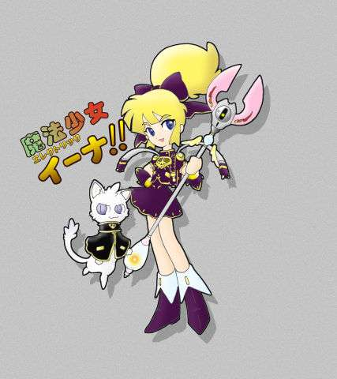
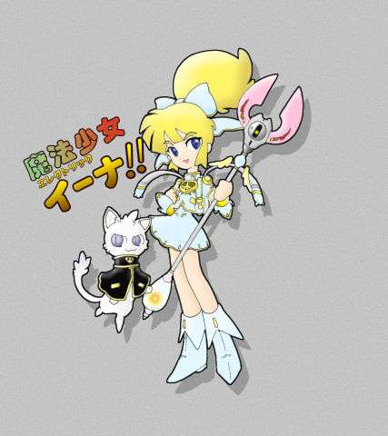

戻る
文庫管理人より この作品は1024×768以上でご覧になるとちょうどいいです。
電光の魔法少女エレクトリック・イーナ
−十二封妖編−
第三話： 登場、真紅の魔法戦士！
封妖達の襲撃から数週間の時が流れた。
これまでの所、再度の封妖の襲撃もなく、叢雲家の人々――特に稲生――は普段とさほど変わらぬ日常を送っていた。
しかし、彼の生活の中で、封妖の戦いが避けられないものとなったとの覚悟が出来たことだろうか？
さて、場所を移そう。所は某市に隣接したとある町の某私立の高校、そこに設置されている道場内・・・
その日は、試合形式の稽古が行われていた。剣道の防具を纏った数組の部員達が激しく竹刀を打ち合っている。
「・・・てぇぃ!!」
そんな中に、稲生少年の姿があった。他の部員に比べて少しばかり背は低いが、その動きは彼等の中で目を見張るものがある。
相手の連撃を軽快な足捌きと竹刀運びで避け、あるいは受け流し、一発の有効打も打たせていない。
そして、相手の乱打が収まった瞬間・・・
「・・・面!!」
竹刀を青眼に構えたまま、まさに体当たりをするが如く竹刀を突き出す。その疾風の――いや、電光の如き一撃は、相手の面を強かに打ち据える。
「・・・一本！」
それで勝負が決した。一本の声の後、両者は向かい合い一礼をし、道場の隅に下がって面を外す。面の紐を解く稲生の傍らで、数人の部員が噂を交し合う。
「・・・凄いな。叢雲の奴・・・」
「あぁ・・・相手は三年じゃなかったのかよ・・・」
「そうだよ。先輩方相手に一本が取れるって言えば・・・」
噂をしていた者達が一斉に、道場の一角で行われている手合いへと視線を向ける。その先には・・・
斜に構えた竹刀で相手の胴を薙いだ長身の剣士の姿があった。その剣士は一礼の後、稲生の傍に来て面を外した。彼とは、光風 炎である。彼は傍らに座する友人から声をかけられる。
「さすが炎、見事な勝ちっぷりで・・・」
「そう言う稲生こそ・・・見事な突きだった様だね・・・」
「・・・って見てたのかよ？」
「いや、でも、あの時先輩の方が気を取られているぐらいだったしね。」
「・・・って、それで勝った・・・とか言わないよな。」
「・・・当然！」
二人の間でこんな会話がされていたことは、道場の喧騒の中で気付いていた者は少なかった様だが・・・
さて、部活の時間も終わり稲生達も帰り支度をして道場を後にした頃、彼等に声をかける声があった。
「あら・・・稲生に炎君じゃないの。」
その声に二人が振り返ると、その先には二人の良く見知った人物がそこにいた。
「姉さん・・・」
「霞先輩・・・」
そう・・・そこに立っていたのは、稲生少年の姉――この高校の三年になる叢雲 霞だった。彼女は二人の元に歩み寄り、二人に声をかけた。
「二人とも部活、ご苦労様・・・」
「ありがとうございます。霞先輩こそ、今日は遅いんですね。」
「まぁね、受験に備えての特別授業でね・・・」
「・・・それは、ご苦労様です。」
「ありがとう・・・」
そんな他愛ない会話を楽しみつつ、三人は人気のない帰路を歩いていたが、突如として炎が額の辺りに手を当てて、黙り込む。
「炎・・・？」
「炎君・・・？」
その様子に怪訝な顔を見せる叢雲姉弟を余所に暫く黙っていた炎は、再度突如として顔を上げて、二人の方に向き直る。
「悪い、稲生！それに霞先輩・・・急用を思い出したんでここで・・・！」
そう言うと叢雲姉弟を残して走り去って行った。
「・・・何だ？炎の奴・・・・・・・・・ウッ！」
そんな彼の背を眺めながら、稲生が呟く。しかし、その疑問を考える間もなく、稲生の身体にある感覚が走った。
「どうし・・・!!」
弟の様子に声をかけた霞だったが、すぐにその変化に悟る。稲生の髪は伸び、背が縮み始めていた。暫しの間を置き、彼女の弟は妹へと姿を変えていた。
「・・・稲生、どうしたの・・・？」
「俺も分かんないよ・・・一体、どうなってんのか・・・・・・！」
そう言いながら何気なく、稲生が視線を走らせた先・・・空き地となっている場所の地面から盛り上がって来る'もの'が見えた。
「・・・・・・!!」
息を呑む弟の視線の先へと姉もまた視線を向け、言葉を失う。その視線の先にあったのは、盛り上がってきた土塊がゆっくりと獣の形に変化している所だった。その情景に霞の口から声が漏れる。
「・・・・・・これって・・・？」
「・・・多分、封妖だぜ・・・姉さん」
「・・・その通りでございます。霞様、稲生様・・・」
霞の言葉に答えを返す声が二つ・・・稲生と、何処ともなく駆け付けた白雲である。そして、続けて白雲が主人たる少女に声をかける。
「稲生様、変身を・・・！」
「分かっててるよ、はーちゃん！」
そう言って、少女は右腕のブレスレットを掲げる。
その間にも、土塊は明確な形を形成して行く。分厚い蹄の付いた太く頑健な四肢、黄土色の硬質な皮膚を持つの巨大な体躯・・・そして、その頭から伸びる漆黒の双角、その姿は野牛のそれであった。しかし、ただの野牛と言うには漂う妖気がそうは思わせなかった
そんな妖牛に向け、ロッドを向けて叫ぶ黒衣の少女の姿があった。
「電光の魔法少女エレクトリック・イーナ参上！・・・封妖、覚悟なさい！」
そう言って妖牛に向けて見得を切ったイーナは、続けてその身を振り返る。
「姉様！ここは危険だから下がっていて・・・！」
そう叫んだ少女の先には、瞳に喜色を浮かべて指を組んでいる姿があった。
「・・・カッコいいわよ！稲・・・イーナ！」
その様子に少女の表情が憮然としたものへと変わる。
「・・・・・・姉様・・・はーちゃん、姉様のことお願い・・・」
「・・・は！・・・霞様、どうぞこちらへ！」
そう言って白雲は、霞を安全と思われる方向へ導いた。それを確認した後、イーナは再び封妖の方に向き直る。
「・・・さぁ、封妖！覚悟なさい！」
そう叫んだ彼女は妖牛に向け、ロッドを構える。
（・・・この封妖の色なら、私の雷撃で倒せる・・・！）
|
 |
イーナは心の中で言い聞かせ、精神を集中する。それに伴って、少女の全身を多くの紫電が走り、その衣装の色が黒から紫へと変化する。そして、全身を走る紫電は、ロッドの先端へ集中して行く。
「必殺！・・・イーナ・ライトニング!!」
必殺の叫びと共に、少女の持つロッドから絶対的な紫電の光条が妖牛に向けて放たれる。
しかし、その光条は妖牛の元に届くことはなかった・・・何故なら、少女と妖牛の間を遮る様に多数の礫が飛来し、それらが少女の放つ光条を四散させた。
「・・・な、何なの・・・!?」
飛来した礫の先へと目を移す。その先に映ったのは、妖牛の傍らにあった樹木の陰に隠れる白猿の姿であった。その姿に、イーナは思わず言葉が漏れる。
「また、あいつなの・・・！」
その一瞬の隙に、妖牛の突撃がイーナを襲う。
「・・・!!」
妖牛の唸りに、イーナは我に返り、その身に紫電を纏わせる。妖牛の突撃を紙一重で上に逃れた彼女は、彼女の背後にあった塀に大穴を開けた妖牛の姿が見えた。その突撃の威力に、彼女は息を呑んだ。
「・・・・・・」
そんな彼女に、背後から悲痛な声がかけられる。
「危ない！イーナ様！」
「・・・・・・えっ・・・？」
その叫びが自身の使い魔のものであると気付く前に、イーナは振り返った。そして、その眼前に鋭利な多数の礫が迫っていた・・・
虚空に浮かぶイーナに迫る礫は、既に回避不可能な距離にまで迫って来ていた。
「イーナ様ァァ・・・!!」
「・・・!!」
迫り来る礫群に、イーナはその身を庇おうと身構え、目を瞑る。だが、多くの礫の前にはそれが気休め程度でしかないことは分かり切っていた。
しかし、彼女に迫る礫は、一つとして彼女の元に届くことはなかった。彼女に迫る礫と彼女の間に真紅に輝く光の壁が射し込み、迫る礫を総て熔かし去ったからだ。
礫による鋭利な痛みではなく、頬の上を流れる温かな風の感覚に、イーナはゆっくりと目を開ける。その目に映ったのは、彼女の眼前に展開された真紅の光――いや、炎の壁が次第に消え行く様と・・・そして、その炎の中で消え行く礫の残骸だった。
「・・・・・・これは・・・？」
「ホーッ、ホッホッホッ・・・情けないことね、イーナさん！」
消え行く炎を呆然と見詰めるイーナの斜め前方の方から、彼女に向けてそんな高飛車な女性の声がかけられる。
声の方に目をやったイーナは、路沿いの家屋の屋根の上に毅然として立つ女性の姿を見付けた。少女の視線に映る女性は・・・波打つ豪奢な赤味がかった金髪に、目元を隠す鳥の翼を意匠化した金の縁取りのある赤い仮面、その仮面から覗く整った鼻筋や優美な口元・・・そして、女性としての優美な曲線を描くその身を包むのは、緋色の長手袋とハイヒールのブーツに、胸元に真紅の輝きを持つ宝玉の付いた緋色のレオタード、その上からは真紅の生地に炎の意匠が金線で描かれたボレロと言う姿をしていた。そして、その右手には炎を意匠化した真紅の柄に金色の刀身を持つ剣が握られていた。
|  |
イーナは目の前に立つ彼女を半ば呆然と見詰めながら呟きを漏らす。
「・・・何者なの!?」
「私？・・・・私の名は・・・猛き真紅の炎・・・華やかなる魔法戦士、スカーレット・フレイ!!」
その呟きを耳聡く聞いた彼女は優雅に、そして毅然とした様子で名乗りを上げた。そして、その名乗りを終えた刹那、彼女――フレイは先程イーナに迫った礫が飛来して来た方に跳ぶ。その先には、物陰に隠れたもう一体の白い妖猿の姿があった。
飛ぶ様に迫るフレイに妖猿が気付く前に、フレイは手に持つ剣を斜に構え、魔力を帯びた言葉を紡ぐ。
「・・・・・・スカーレット・スラッシュ！」
その言葉に伴って彼女の剣の柄から炎が噴出し、その炎が刀身を走る。そして、瞬時に妖猿の懐に飛び込んだフレイは、炎を宿す刃で眼前の妖猿を逆袈裟に両断した。そして、妖猿は刃の走った痕から噴き出す炎に、断末魔の叫びとともにその身を熔け崩れ落ちて行った。
そして、崩れ落ちる妖猿を一瞥もせずにフレイはその身を翻し、刃を構え直す。その剣の柄から再び刀身へと炎が走る。
「・・・スカーレット・フレイム！」
そう叫んで一閃した剣の刃から、剣風の如く紅蓮の火炎が飛ぶ。そして、その火炎は妖牛の傍らの樹上に隠れるもう一体の妖猿に襲いかかった。飛来する火炎から逃れんとする妖猿だったが、その火炎は緩やかな弧を描いて妖猿を捉えた。そして、もう一体の妖猿もまた、断末魔を上げて熔け崩れ落ちて行った。
名乗りを上げてから二体の妖猿を倒したのに要した時間はまさに瞬く間と言った程の時間だった。
「・・・・・・す、凄い・・・」
まさに、二体の敵を瞬殺したフレイの手腕に、思わずイーナは感嘆の呟きを漏らす。その呟きに、フレイは口元を軽く緩めた。そして、イーナの頭上から甲高い哄笑が聞こえて来た。
「クァーッ、カッカッカッ！・・・見たか！我が主、フレイ様の実力を！」
「貴様は・・・!!」
その哄笑に、イーナの元に駆け寄った白雲が怒鳴る。振り仰ぐ少女の見詰める先では、光の加減で金色にも見える真紅の羽を持つ鳥が、フレイの元へと舞い降りて来たのだった。その鳥は、色合いこそ美しい赤い色であったが、その姿形は鴉のそれである。その鳥はイーナと白雲の両者を見下す様な風情で癇に障る声色で言葉を吐く。
「久しいな、白雲・・・・・・しかし、その程度の主に仕えねばならんとは憐れな・・・クァーッ、カッカッカッ！クァーッ、カッカッカッ！」
そう嘲笑する使い魔を横目に一瞥して、フレイが冷たく言い放つ。
「・・・五月蝿いわよ・・・紅羽・・・」
その言葉に何か悲しそうな表情と声色で、彼女の使い魔たる赤い鴉が彼女の方に頭を廻らす。
「・・・あ、あの・・・フレイ様・・・私のことは親愛を込めて『こーちゃん©』と呼んで頂きたいのですが・・・」
「・・・イヤよ・・・あなたのことは、『紅羽』で充分・・・」
嫌な顔の使い魔を無視して、フレイはイーナの方に向き直る。
「イーナさん・・・たかが、封妖の分身を二体ばかり倒したぐらいで、そんな風に感心するなんて底が知れましてよ・・・・・・これからが本番よ・・・・！」
そう言うと、妖猿を倒された衝撃から立ち直り、体勢を立て直した妖牛の方に向き、自らの剣を彼奴に向け大上段に構えた。そして、再び剣の柄から炎が噴き上がり、その炎は刃を駆け上がり、その切先で巨大な火球として凝縮して行く。そして、彼女の魔力を帯びた叫びが放たれる。
「・・・スカーレット・ブレイズ!!」
その叫びと共に振り下ろされた剣から放たれた紅蓮の火球が、妖牛に向けて襲いかかる。迫る火球を妖牛は避けることも出来ない。火球が妖牛に命中すると同時に、妖牛の立っていた一帯は紅蓮の劫火に包まれる。その炎を一目見た後、フレイは誇らしげにイーナの方を向く。
「どう？イーナさん、私の実力・・・貴女より数段上だと言うことが分かって頂けたかしら・・・？」
その物言いに何か癇に障るものがあるものの、イーナは彼女を認める言葉を口にしようとしていた。
しかし、その言葉は炎の中から上がった唸りに掻き消されてしまった。何者も焼き尽くすかに思われた劫火が消え去った後、その場にあったのは・・・封妖の残骸ではなく、よりその体格を巨大化させた妖牛の姿であった。
「・・・え・・・？」
「・・・・・・どう言うことなの、紅羽!!」
予想外の様牛の健在と言う事態に、一瞬の動揺を見せる二人・・・その内のフレイから発せられた問いかけに、その使い魔は答えを返した。
「は、はいはい・・・私が愚考いたしますに、あの封妖・・・どうやら土行の存在と推察出来ます。五行説に曰く『火生土』とありますから、フレイ様の火炎を浴び、あの封妖はその力を己の力として吸収したのではないかと・・・」
「・・・そう・・・・・・そう言うことは・・・！」
「ギャーッ!!」
自身の使い魔の言葉の直後、フレイは怒気を含んだ声と共に剣の平でしたたかに紅羽を打ち据え・・・
「もっと早めに・・・！」
「ギュゲー!!」
打ち据え・・・
「おっしゃい〜〜!!!!!!」
「グュグァァァァァァ〜〜〜!!」
最後にそのまま打ち飛ばした。そのまま、紅羽は空の彼方へ吹き飛ばされて行く・・・
一方、そんなフレイ主従を横目に、イーナは白雲に問いかける。
「はーちゃん！・・・あの紅羽・・・って言うのの言っていることは正しいの？」
「・・・は、不愉快ですが・・・その通りです。」
「・・・って言うことは、私のイーナ・ライトニングならあの封妖を倒すことが出来ると思う・・・？」
「・・・勿論です！」
そう断言した白雲の言葉に、イーナは微笑を浮かべて軽い頷きを返し、近くにある塀の上に降り立ち、自らの使い魔に指令を与える。
「はーちゃん！暫く時間を稼いでいて・・・！」
そして、ロッドの先端を妖牛に向け、意識を集中させる。紫の衣装を纏う少女の全身から顕れる無数の紫電が、次第にその両手に・・・そして、その手に持つロッドへと集中して行く。ロッドの先端に集中して行く火花は、既に光の塊と化して行く・・・
「・・・イーナ・ライトニング!!」
そして、ロッドの先端の雷光が絶対的な威力を持つ光条となって妖牛の元へと襲いかかる。その光条は、雷猫の撹乱に動きを止めていた妖牛の胴に大穴を空けた。堪らず妖牛は苦悶の叫びを上げ、その身は大穴の辺りから崩れ始めて行く。
「やった！・・・・・・えっ・・・!?」
必殺の一撃に歓声を上げかけたイーナは、次に驚愕の呟きを漏らした。少女の眼前で、苦悶の叫びとともに大穴の辺りから崩していた筈の妖牛が、その崩れた身によって穴を塞ぎ、その身を元通りの姿に戻っていた。その妖牛の姿に、イーナは思わず狼狽えた呟きを漏らす。
「そ・・・そんな・・・・・・」
「仕方がありませんわね・・・・・・モード・チェンジ！」
狼狽えるイーナに声をかけたフレイは、掛け声とともに胸の宝玉の辺りで腕を組む。その声の直後、彼女の胸部の辺りから紅・緋・朱・・・等の各種の赤い光が彼女を包んだ。そして赤き光が消えた後、その場に立っていたフレイは姿を変えていた。
その髪は流れる様なストレートの銀髪に、仮面や衣装の金色の部分は銀色となり、上着の炎の意匠は風を意匠化したものに変化していた。そして、その手に持つ剣はいつのまにか紅き大扇へと変わっていた。
「疾き真紅の風・・・麗しき魔法戦士スカーレット・フレイの力、しかと味わいなさい!!」
フレイはその言葉とともに、右手の大扇を左手に持ち替えた後、扇を開き構えた。その扇の周囲に徐々に魔力を帯びた風が集まって行く・・・
「・・・スカーレット・ゲイル!!」
その叫びとともに振るわれた扇から、紅い輝きを帯びた風が無数の刃となり、イーナの雷撃から立ち直った妖牛を再度襲う。紅き風の刃によって、妖牛はその身を切り刻まれて行く・・・そして、風の刃に切り刻まれ、妖牛は苦悶の呻きを上げて膝を折る。
「どう、私の・・・・・・何ですって!?」
今度はフレイが狼狽えた声を漏らす。膝を折る妖牛の身体に走る無数の裂傷が次々と塞がり、再度立ち上がって来たからである。
「「どう言うことなの・・・？」」
動揺を隠せずにいる二人の言葉を答える者もなく、妖牛は自らの立つ地面を打ち飛ばし、吹き上がる土煙を纏わせながら、上方に立つ二人の魔法少女達を狙って跳び上がる。
飛行能力がなく、跳躍も得意ではないらしい妖牛の突撃は、二人にとって回避するのは難しくなかったが、次なる決定的な一撃を打つ間をなかなか作らせない。
「・・・まったく！・・・どうなっているのよ？・・・・・・スカーレット・ウィンド!!」
跳びかかった妖牛に擦違い様に打ち出した赤き風の刃は、妖牛の肩を大きく切り裂く・・・しかし、その傷も妖牛が着地する頃にはほぼ完治している・・・そんな状況が続く。
フレイとは違って瞬時に発動できる魔法を持たないイーナは、そんな状況の中で回避に集中するのが精一杯であることに歯噛みしていた。
「・・・・・・何とかできないの・・・アイツは一体・・・」
そんな少女の傍らで、突然彼女の使い魔が言葉を発する。
「イーナ様、思い出しました・・・あの封妖の名はガンチュウ・・・驚異的な回復力を持つ封妖です・・・しかし、ここまで驚異的なものだとは・・・」
苦々しい表情で雷猫はそう呟く。その呟きにイーナが半ば自棄で問い返す。
「・・・それじゃあ、どうしたらいいって言うの？」
「恐らく・・・一撃で奴を仕留めることが出来れば、倒せるものかと・・・・・・」
「そんなこと・・・出来るの・・・？」
「イーナ様の最大威力の雷撃ならば・・・・・・」
妖牛の突撃を回避しながら交されるその言葉に、割り込んで来る者があった・・・フレイだ。
「・・・その言葉、本当なんですの・・・？」
「・・・はい、恐らくは・・・・・・」
虚を付かれた様子ながら、白雲が答える。それを聞いた後、彼女は背後を振り返る。その先には、いつのまに戻ったのか紅き鴉があった。
「紅羽・・・！」
「は・・・はい、不愉快ですが奴の言う通りかと・・・」
二体の使い魔の言葉を聞き、フレイは軽く頷く。そして、イーナの方を向き、言い放つ。
「・・・そう・・・イーナさん、貴女はイーナ・ライトニングの準備をして！・・・早く!!」
「え・・・えぇ・・・」
咄嗟に返答を返したイーナを確認したフレイは、虚空を滑り妖牛に向けて風刃の連続攻撃を行い始めた。
妖牛との戦いをフレイに任せ、イーナは魔力を高めようと集中を始めた・・・しかし、全身を走る紫電は後一歩の所で増加せず、彼女の変化を起こすに一歩足りない。
「・・・・・・ダメ・・・魔力が集まって来ない・・・」
焦るイーナの様子に、白雲は主人に声をかける。
「イーナ様！・・・こうなったら、あれを使いましょう！」
そう言ってとある場所を見上げる雷猫の視線を追い、少女もそれを見上げる。雷猫の視線の先にあるもの・・・それは、高圧電線であった。
「・・・・・・スカーレット・ウィンド!!」
跳躍して迫る妖牛――ガンチュウ――に迎撃する様に紅き風刃を放ち、紙一重でその突撃を避けるフレイ・・・風に乗り、軽やかに空中を舞う彼女も、妖牛との戦いによる消耗でその動きも鈍り始めていた。しかし、疲れを感じつつも彼女は扇に魔力を集めて、妖牛との睨み合いを続けていた。
そんな彼女に上方から声がかけられる。
「・・・フレイ!!・・・」
声の下方を見上げるフレイの視線の先・・・そこには、高圧電線の上に立つ少女――イーナの姿があった。少女は、その衣装を青白いそれに変化させ、全身に無数の紫電を走らせて電線を支える高架に立ち、その背に背負う箱から線を延ばしてある。その先端にある挟状の部分が高圧電線を挟み込み、時に電線からイーナに向かって紫電の火花が駆け上がって来ている。
「・・・貴女は下がって・・・！」
そう叫ぶとともに、イーナは高架から跳んだ。それに伴いイーナから伸びていた線も電線から離れる。そして、少女の全身から生じる紫電の光が、次第にある一点へと集中して行く・・・そして、妖牛――ガンチュウを直下に見下ろす上空で、少女は叫んだ。
「・・・必殺!!・・・イーナ・ライトニング!!!!」
そして、妖牛に向けて圧倒的・・・いや、絶対的な威力の雷光の柱がまさに落下して来る。
「・・・スカーレット・ゲイル!!」
更に、イーナの雷撃に合わせる様にして、別方向からガンチュウに向け、無数の風刃が迫る。先程の物と比すれば若干威力は落ちていたが、それはフレイの放った必殺の一撃であった。
無数の風の刃に切り刻まれ、更に絶対的な量の雷光の直撃を受けた妖牛は、全身から土塊や砂礫を撒き散らしながら、その形を失って行った・・・そして、崩壊した土塊の上に黄色に輝く勾玉が現れる。
「・・・・・・やった・・・・・・」
ガンチュウの身が崩壊して行くのを確認しながら、イーナはゆっくりと意識を失って行った。その衣装は既に白から黒い物に変わり、その身は重力の法則に従い地面への落下を始める。
「・・・！・・・イーナ様！」
その落下を始めたイーナの身は、途中でその落下を止めた。飛翔するフレイが、少女の身をその腕で抱き止めたからである。ゆっくりと地上に降り立ったフレイは、抱いていたイーナを塀にもたれかかる様に座らせた。
「・・・・・・今回は、貴女の貸しと言うことにして差し上げるわ・・・また、逢いましょう。」
そう言葉を残して、彼女は飛び去って行った。
そんな二人の様子を見詰める一対の瞳があった。その身を小さき'もの'に変え、その場の一部始終を見終えたその'もの'は、誰にも気付かれぬ様にしてその場を後にした。
|

|
そして、それより少し過ぎた夜更けの頃・・・
"御空神社"の背後に広がる山々の奥深いとある一角に飛来する一体の影があった。影に向け、地面より声がかけられる。
「・・・何をしていた？・・・テンジュツ・・・」
地中より響く声の主は、ゆっくりと鎌首をもたげる。飛来した影は、その'もの'の元へと降り立つ。
「敵の様子を見に・・・・・・ガンチュウが倒されました。」
「・・・何!?・・・そんな馬鹿な・・・」
飛来した影の言葉に、樹上から動揺の声が上がる。
「・・・本当さ・・・貴様の分身も、炎術の使い手にあっけなく倒されていたよ・・・所詮、貴様の策なんぞ、その程度のものさ・・・」
「な・・・!!」
嘲弄の響きを含むその言葉に、樹上の影が激昂する気配を見せる。しかし、その場に鎌首をもたげた'それ'の言葉が響く。
「・・・鎮まれコウシン・・・テンジュツもな・・・」
その一言で、その場は何もなかったかの様な静寂を取り戻す。暫しの静寂の後、鎌首をもたげる'それ'に向け、嘶きを含む声をかける'もの'が表れる。
「・・・ランシン・・・その様な敵なら、我かネッシが相手をしようか・・・？」
また、別の方向からも低く響く嘶きを含む声とともに言葉をかける'もの'も表れる。
「・・・それとも、儂やウンシが出向こうか・・・？」
その言葉の返答を'それ等'が行う前に、別の方向から言葉を返す者があった・・・先程飛来した影からである。
「エンゴ、それにヒョウガイ・・・折角の申し出ではありますが、ここは我にお任せ願いたい・・・」
その言葉に'それ'が言葉をかける。
「・・・・・・出来るのか・・・テンジュツ？」
「我が力を持ってすれば、十二分に奴等の相手をすることは可能かと・・・お任せ下さい・・・」
そう言って畏まる影の様子を、その場にいる幾対の瞳が見詰めていた。
「・・・ならば・・・次はそなたに任せるとしよう・・・」
'それ'の言葉が厳かにその場に響いた・・・
（続）
〈次回予告〉
「我が名はテンジュツ・・・我が力の前には、貴様等の力なぞ無力に等しい・・・」
「！・・・そんな!?・・・私の風が・・・」
「・・・無駄と言ったろう・・・」
「・・・これで、最期だ・・・！」
「イーナ様ァ!!!!」
「・・・！・・・イーナさん!!」
「・・・・・・・・・え・・・？」
次回、"魔法少女の最期!?"・・・お楽しみに・・・
−でーた・せくしょん（？）−
『ガンチュウ（岩丑）』
強力な自己再生能力と火行・土行系攻撃を吸収する能力を持つ牛の姿をした第九位の封妖、属性は大地、弱点は木行系攻撃
|
〈あとがき〉
夜夢：・・・やっとお届けすることが出来ました。イーナ封妖編の第三話です。
暮幻：結構かかったと言えるのかしら・・・取り敢えず、ミストレスシリーズの本編も早く上げとかないとまずいんじゃないの？
夜夢：・・・うん・・・ジツはその通りなんだけど・・・
昼現：そのことに伴い、第四話の発表は少し遅れるかもしれません。次回はミストレス本編の方を出す予定です。
暮幻：・・・取り敢えず、そのことはほっといて・・・とうとう、登場したわね、彼女が・・・
夜夢：まぁね・・・それに、封妖全員の名前が出揃いました。後は・・・彼女の登場を待つばかり・・・♪
暮幻：・・・でも、まだそれぞれの能力は明らかにはなってないけれど・・・
夜夢：それは、話が進行して行けば次第に明らかになることだし・・・ね。（カハイタワラヒ）
暮幻：でも・・・あの予告は・・・
夜夢：（カワヒタワラヒ）・・・少し、煽り過ぎかな・・・？・・・でも、まぁ・・・ああなってしまうし・・・
暮幻：・・・少しもフォローになってないわよ・・・一応、イーナの物語はまだまだ続く筈なのですけどね・・・（呆）
昼現：・・・ともあれ、御一読頂きありがとうございます。また次回作の方を楽しみにして頂ければ幸いです。
戻る
□ 感想はこちらに □